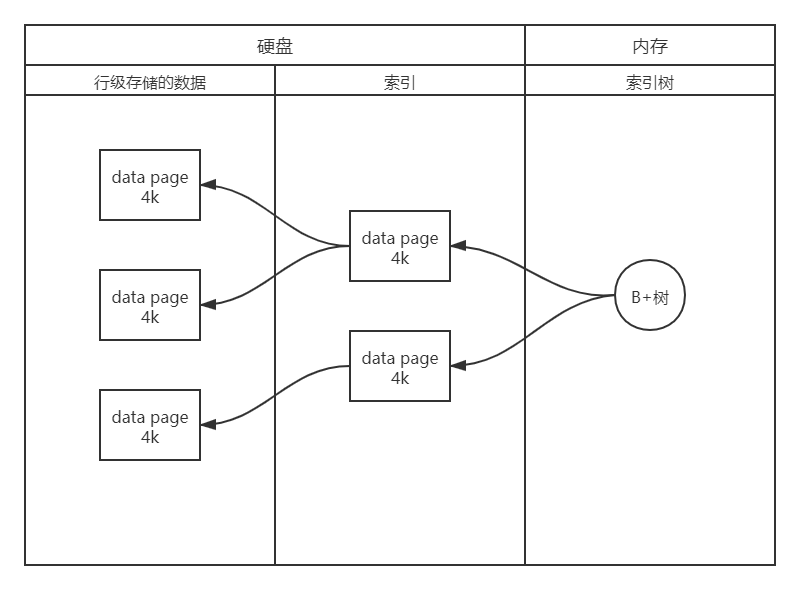

Redis(一) 基操
常识
- 寻址时，磁盘（毫秒级）比内存（纳秒级）慢10W倍
- I/O Buffer：
- 磁盘有磁道和扇区，一个扇区512Byte，索引成本变大
- 操作系统，无论读多少，都是最少以4k大小从磁盘读取数据
数据存储发展
文件存储
随着文件变大，查询速度变慢，磁盘I/O成为瓶颈
数据库存储
关系型数据库建表时，必须给出schema
- 类型：字段的字节大小
- 存储方式：行级存储
表很大时，性能下降？
如果有索引，增删改变慢（维护索引）
查询命中索引时，1个或少量查询依然很快
查询命中索引时，并发或复杂查询时变慢（受硬盘带宽影响速度变慢，需读取多个data page到内存）

SAP HANA
内存级别的关系型数据库，用不起，跳过
缓存（Redis、Memcached）
Memcached：value没有类型概念
Redis：支持多种类型的数据结构，如
字符串（strings），散列（hashes），列表（lists），集合（sets），有序集合（sorted sets）与范围查询， bitmaps， hyperloglogs 和 地理空间（geospatial） 索引半径查询。
取回Value中的某一个元素，如：返回list[index]
Memcached：返回value全量数据到Client端
存在以下两个复杂点：
- Server端：网卡IO
- Client端：编写代码实现Value的解码操作
Redis：规避Memcached两个复杂点，Server对每种类型都有自己的方法，不需要取走全量数据，Client端代码比较轻盈。即：
计算向数据移动。
Comments